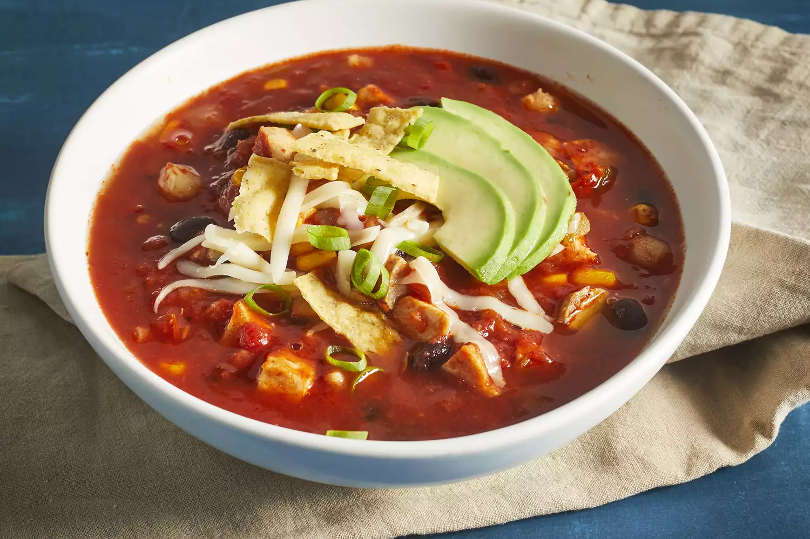

Chicken Tortilla Soup

Steps
- Heat oil in a stockpot over medium heat. Add onion and garlic; saute until soft, about 5 minutes. Stir in crushed tomatoes, condensed broth, water, chili powder, and oregano; bring to a boil. Reduce heat and simmer for 5 to 10 minutes.
- Stir in black beans, cooked chicken, corn, hominy, chile peppers, and cilantro. Simmer for 10 minutes.
- Ladle soup into individual serving bowls, and top with crushed tortilla chips, avocado slices, Monterey Jack cheese, and green onions.